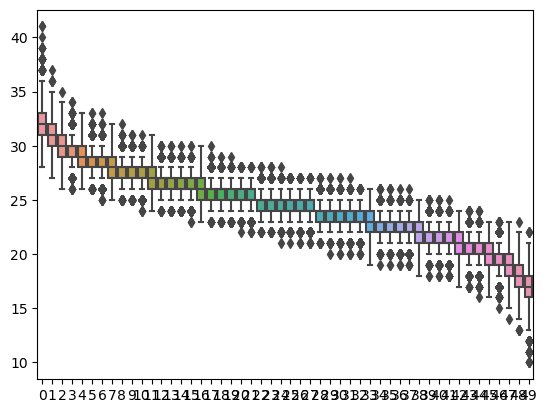

It is frequently the case that we need to generate examples of graphs and networks. The random graph models that we have seen so far in this course provide models from which we can draw samples. In this section, we will discuss how this is done and what the results are. We will begin by sampling from the Erdos-Renyi model of random graphs, which is the random graph model \(G(n,p)\) for graphs on \(n\) vertices where each edge is included independently with probability \(p\in (0,1)\text{.}\)
There are many subtleties involved in making random choices. For example, computationally, how does one generate a "random" value in the interval \((0,1)\text{,}\) which is required when determining whether or not an edge is included? While we will not go into detail about how this is done, the answer is that for non-secure applications one can use a pseudorandom number generator https://en.wikipedia.org/wiki/Pseudorandom_number_generator. For example, in Python a random number in \((0,1)\) is generated using the Mersenne Twister https://en.wikipedia.org/wiki/Mersenne_Twister. Using this in combination with Walker’s alias method https://en.wikipedia.org/wiki/Alias_method gives an effective algorithm to sample reasonably randomly from any finite probability distribution. For our purposes, we will assume that all of this is correctly implemented in software that is used for experiments.
To sample from the Erdos-Renyi model \(G(n,p)\text{,}\) for each possible edge in the graph, compute a random value in \((0,1)\) and include the edge if the value is less than \(p\text{.}\)
In Sagemath, the command to draw a single random element of \(G(n,p)\) is graphs.RandomGNP(n,p). Let’s do some experiments to see what qualities the resulting graphs have. We will first look at the maximum degree using https://sagecell.sagemath.org/. The following code plots a histogram of the max degrees for a sample of \(10,000\) random graphs drawn from \(G(50,0.5)\text{,}\) i.e., the uniform distribution on graphs with \(50\) vertices.
n = 50
p = 0.5
sample_size = 10000
max_degrees = []
for _ in range(sample_size):
G = graphs.RandomGNP(n,p)
m = max(G.degree_sequence())
max_degrees.append(m)
show(histogram(max_degrees,bins=n))
Observe that the average maximum degree appears to be around \(32\text{,}\) and if you want to generate a random graph on \(50\) vertices with maximum degree less than around \(25\text{,}\) it might be difficult to find such an object using this method.
Let’s see what this looks like by copying the following code into Sagecell and running it.
n = 50
p = 0.5
sample_size = 1000
degree_sequences = []
for _ in range(sample_size):
G = graphs.RandomGNP(n,p)
seq = sorted(G.degree_sequence())
seq.reverse()
degree_sequences.append(enumerate(seq))
sum([points(seq) for seq in degree_sequences])
Observe that there is a challenge here, because many of the points corresponding to the degrees are overlapping. Thus, we don’t have any sense of the density of how many dots are on top of each other.
Discuss the scatterplot above. Does it make sense that some points are "secretly" appearing multiple times on top of each other? Where do you think the highest density of repetition of points is?
Our response to this challenge of data visualization is to replace each column of dots by a box-and-whiskers plot showing the distribution of the \(i\)-th degree in the sequence. This is done by the following code, and now we will run this on \(10,000\) samples instead of only \(1,000\text{.}\) We will use the pandas and seaborn packages for Python for the data visualization. Unfortunately, Sagecell does not provide enough computational support for this, but you can run it on your own at https://cocalc.com/ or through a local Sagemath install.
import pandas as pd
import seaborn as sns
n = 50
p = 0.5
sample_size = 10000
degree_sequences = []
for _ in range(sample_size):
G = graphs.RandomGNP(n,p)
seq = sorted(G.degree_sequence())
seq.reverse()
degree_sequences.append(seq)
data = pd.DataFrame(degree_sequences,columns=range(n))
ax = sns.boxplot(data=data)

Figure7.1.5.Boxplots for the degree sequence sample.
Note that for the largest degree (the value of \(d_0\) in this code, for which the boxplot is on the far left), the distribution is centered at \(32\text{,}\) which matches our earlier experimental data. These box-and-whisker plots make it clear that the typical degree sequence of a graph sampled from \(G(50,0.5)\) passes through a very narrow range of values.
Discuss the box-and-whisker plots above. Does it make sense how they were constructed? What do the boxes mean, what do the lines mean, and what do the dots mean? What extra information does this give you beyond the scatterpoint diagram?
The problem with sampling from an Erdos-Renyi graph is exactly the bias toward certain structural qualities of the graph, which is caused by the underlying binomial distribution. This is articulated clearly in the following quote from: Fosdick, Bailey K., Daniel B. Larremore, Joel Nishimura, and Johan Ugander. "Configuring Random Graph Models with Fixed Degree Sequences." SIAM Review 60, no. 2 (2018): 315-55. http://www.jstor.org/stable/45109418
Figure7.1.7.Quote regarding sampling from graph models.
Thus, to sample graphs that have a degree distribution with a different shape than those produced by Erdos-Renyi graphs, we want to sample from either the configuration model or some variant thereof. We will consider some experiments using random graphs with a fixed degree sequence generated with almost the uniform distribution, using an algorithm from: Bayati, M., Kim, J.H. \amp Saberi, A. A Sequential Algorithm for Generating Random Graphs. Algorithmica 58, 860-910 (2010). https://doi.org/10.1007/s00453-009-9340-1 This is called using the Python Networkx package as random_degree_sequence_graph, via https://networkx.org/documentation/stable/reference/generated/networkx.generators.degree_seq.random_degree_sequence_graph.html#networkx.generators.degree_seq.random_degree_sequence_graph. Note that we will no longer be looking at measurements related to the degree sequence, because we have fixed it. However, we might now look at something like number of spanning trees. The following code will generate \(5,000\) random graphs having \(20\) vertices of degree \(3\text{,}\) to evaluate in https://sagecell.sagemath.org/.
import networkx as nx
import numpy
sample_size = 5000
spanning_tree_counts = []
for _ in range(sample_size):
G = Graph(nx.random_degree_sequence_graph(20*[3])).copy(immutable=True)
spanning_tree_counts.append(G.spanning_trees_count())
print("mean is: "+str(numpy.mean(spanning_tree_counts)))
print("standard deviation is: "+str(numpy.std(spanning_tree_counts)))
show(histogram(spanning_tree_counts,bins=30))
Note that the average number of spanning trees in a graph in our sample from this model is around \(3.6-3.8\) million, and the standard deviation is around \(0.9-1.0\) million. Thus, there is a wide variety of behavior in terms of the number of spanning trees for graphs with \(20\) vertices of degree \(3\text{,}\) and these are graphs that you will probably never sample using the Erdos-Renyi model.
One other technique for sampling from connected, loopless, simple (no multiple edges) graphs with a fixed degree sequence is to use Markov Chain Monte Carlo simulation. This is done as follows. Define the graph of graphs \(\mathcal{G}(\mathbf{d})\) to be the directed graph with vertex set all connected graphs with degree sequence \(\mathbf{d}\text{.}\) A connected graph \(G\) has an arrow to \(G'\) in \(\mathcal{G}(\mathbf{d})\) if \(G'\) is obtained from \(G\) via a double-edge swap, i.e., if there exist edges \(uv\) and \(xy\) in \(G\) such that replacing these edges with \(ux\) and \(vy\) produces \(G'\text{.}\)
Figure7.1.9.Figure showing a double-edge swap, taking from: Benjamin Braun, Kaitlin Bruegge, Matthew Kahle. "Facets of Random Symmetric Edge Polytopes, Degree Sequences, and Clustering", Discrete Mathematics \amp Theoretical Computer Science, December 11, 2023, vol. 25:2.
If performing a particular double-edge swap on \(G\) would produce a graph that is outside the space (i.e. the new graph has a loop or multiedge or is disconnected), that swap will correspond to a loop on the vertex \(G\) in \(\mathcal{G}(\mathbf{d})\text{.}\) It is shown in the paper by Fosdick et. al. referenced above that \(\mathcal{G}(\mathbf{d})\) is regular, strongly connected, and aperiodic, which means that samples asymptotically obey a uniform distribution.
So, to sample using double-edge swaps, one would first create a graph with the degree sequence you want using the reverse of the Havel-Hakimi process. Then, one would repeatedly do random double-edge swaps to produce a "random walk" through the graph.
Starting with the Petersen graph, do a sequence (by hand) of double-edge swaps to sample from the space of finite simple graphs with degree sequence \((3,3,3,3,3,3,3,3,3,3)\text{.}\)